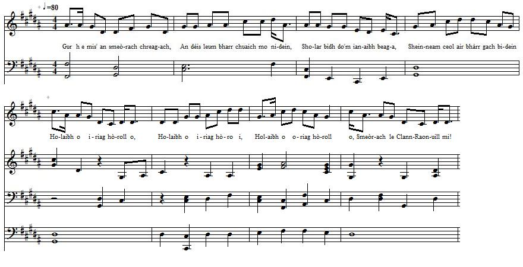
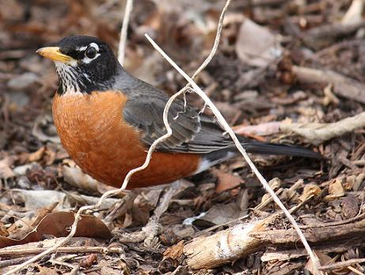

Smeòrach Chloinn-Raonuill
The Mavis of ClanRanald - La grive de ClanRanald
by Alasdair Mac Mhaighstir Alasdair -Alexander McDonald (c.1700 - c.1770)
A Jacobite bacchanalian song in praise of Clan Ranald
Tune - Mélodie"Smeòrach Chloinn-Raonuill"
A pentatonic tune, as sung by Captain Donald Joseph MacKinnon and recorded by Dr Alasdair MacLean
Sequenced by Christian Souchon

|
"A song toasting the Jacobite cause and the Clan Donald.
In this song the thrush of ClanRanald praises the clan. It was raised in a land that was overflowing with milk, honey and wine and belongs to those from Caisteal Tioram (in Moidart).
The song combines the theme of nature with a spirited and imaginative description of a stormy winter celebration (?) of Clan Donald as well as voyage between the Hebrides and Jacobite elements." (Item Notes to record 73077 kept by the "School of Scottish Studies" - Permanent Link: www.tobarandualchais.co.uk/fullrecord/73077/1) |
 American Robin Turdus migratorius. Photo taken in Louisville Kentucky |
"Un chant qui est un toast au Clan Donald et à la cause Jacobite. Dans ce chant, la Grive de ClanRanald fait l'éloge du Clan. Elle a grandi dans un pays où coulaient à flots le lait, le miel et le vin et qui appartient aux seigneurs de Castel Tirrim en Moidart.
Le chant combine le thème de la nature et une description, où l'esprit le dispute à l'imagination, de la célébration, par un hiver rigoureux, (?) du Clan Donald, ainsi que d'un périple au cœur des Hébrides, à quoi s'ajoutent des éléments Jacobites." (Notes sur l'enregistrement 73077 conservé par la "School of Scottish Studies" - Lien permanent: www.tobarandualchais.co.uk/fullrecord/73077/1) |

|
THE MAVIS OF ClanRanald. [1]
CHORUS Holaibh o iriag hòroll o, Holaibh o iriag hòro i, Holaibh o oriag hòroll o, The thrush of ClanRanald it's me! 1. I'm the thrush on the rock singing When I leave my cosy nest, To get food for my wee fledgling, And my tune sounds at its best. Holaibh o iriag, &c. 2. I'm the mavis of Clan Donald As destructive as a lion, I disguise as an animal To convert my speech to tune. Holaibh o iriag, &c. 3. In the Blue Rock I was raised Of Black-Castle-of-the Clerks, A land always overflowing With milk, honey and with whine. [2] Holaibh o iriag, &c. 4. I'm a Finnan Island sapling Offspring of Castle-Tioram. My chant rises, morn and evening, From my beak, sweet, honeylike. Holaibh o iriag, &c. 5. My brood is royal and precious, Worthy of a nest so good, Spotless descent, not incestuous, From Alan Mac Rory's brood. [3] Holaibh o iriag, &c. 6. Purebred race, no stain, no blemish No harbinger of decay, No fault, no guile, no treachery, Impair your pluck in the fray! Holaibh o iriag, &c. 7. Royal race, fond of harvesting With your merry scythe of steel Which is like a spotless diamond, Free of red rust and genteel. [4] Holaibh o iriag, &c. 8. Great race, no door-bolt, no boasting Stop you, no foolish ado; Kind and faithful to kith and kin, Merciless towards your foe. Holaibh o iriag, &c. 9. Ronald with your golden symbols: Your plaid, your targe and your sword, You don't yield to gun or pistol, Splendid warriors, on my word! Holaibh o iriag, &c. 10. They're the only people I know, Who're not to plunder incline, But to redress grievance, sorrow You'll never find them supine. Holaibh o iriag, &c. 11. Not until my King comes back home Shall I fly out of my hole, Disheartened and sullen I'll brood, Until I have reached my goal. Holaibh o iriag, &c. 12. Not until my Prince sails over Do I leave my cosy cage, And the chanting of the rover Starts up on that steady stage. Holaibh o iriag, &c. 13. On every bow, one May morning, Music will rise from my beak Splendid twittering and trilling, That echoes afar repeat. Holaibh o iriag, &c. 14. There will be crops on the hillocks Litanies on every grass, Since my fellows, perched on the stalks, Will sing the theme to my bass. Holaibh o iriag, &c. 15. Immersed in tones my throat trembles, My sweet tune fills out my chest, And the bonfire I will kindle, Shall prompt to dance every leg. Holaibh o iriag, &c. 16. I shall beat time with head tosses, My psalm shall sound countrywide, I shall sway all lads and lasses. Music rise! Sorrow subside! Holaibh o iriag, &c. 17. Sweet speckled birds of the forests, Hark, church organs with you vie. As does every rooster, flawless, Perched on bars from low to high. Holaibh o iriag, &c. 18. I'm but a wee little whistler, But by morning dew inspired, And supported by sweet plovers, When my tune their hollows strikes. Holaibh o iriag. &c. 19. Let's pour a toast to the army Levied by Charles, down our throats, Reapers who harvested plenty Of flesh and bones of Red-Coats! Holaibh o iriag, &c. 20. Let us toast, wetting our gullets, A voyage about to start; The health of James with cheerfulness That of Charles with all our heart! Holaibh o iriag, &c. 21. Hail! Eminent King's family! Let us drink fairly your health! Let us cleanse our throats thoroughly With a dram, our greatest wealth. Holaibh o iriag, &c. 22. Drain, all the way down our gullets, Toast to those heroic knights, All the rage impairing spirits, And the skills one needs to fight! Holaibh o iriag, &c. 23. We are not far from the harbour, We shall anchor presently. Toast the Head of Seileach, Moidart! Toast the Chief of Glengarry! [5] Holaibh, o iriag, &c. 24. Fill this glass, take up the tune That Ranald's health I may drink! Don't brood over past misfortune, Coolness smothers heat within! Holaibh o iriag, &c. 25. Forge ahead with this pure beverage: Don't forget the health of Sleats! Those young knights will rise with courage, With their shrieks harry the Beast. Holaibh o iriag, &c. 26. A special toast to Earl of Antrim's Clan warriors, the Irish hordes! Don't mind this glass filled near to brim: Sour throat - I bawled myself hoarse. Holaibh o iriag, &c. 27. Let us hail with formal shower, At this stage the Boisdale Clan, May to their elbow more power Help the Saxon Beast to ban! Holaibh o iriag, &c. 28. One more time for the Southern Gael, Whose slopes are grey like his blade With which he will prune a great deal Of heads, on his glorious raid. Holaibh o iriag, &c. 29. Say, which enemy could withstand them If their bare fists would them thresh? New dangers arouse their passion, As would a well wielded sash. Holaibh o iriag, &c, 30. Without stopping let us finish! Frustration would make me lame. My tune, though sung by a mavis, Hails Keppoch's hawk, all the same. Holaibh o iriag, &c. 31. I drink the health of the clansmen Of Glencoe where salmon thrives. May returning ghosts inspire them, And fear from their mountains drive. [6] Holaibh o iriag, &c. 32. You, too, will be anxious to sail, Clan MacDougall of Barra. Royal hearts will be of avail T' usher in a new era. [7] Holaibh o iriag, &c. 33. John Ciar of Lathurn, we'd better [8] Never wear the narrow style . Smith of joy and honour's shelter, Protect us from drawers' guile! [9] Holaibh o iriag, &c. 34. What's the reason for our anger? I can say that without frill. No idle talk, I shall answer: What we exact is God's will. [10] Holaibh o iriag, &c. Translation Christian Souchon (c) 2015 |
SMEORACH CHLOINN-RAONUILL. [1]
LUINNEAG. Holaibh o iriag hòroll o, Holaibh o iriag hòro i, Holaibh o oriag hòroll o, Smeòrach le Clann- Raonuill mi, 1. GUR h-e mis' an smeòrach chreagach, An déis leum bharr chuaich mo nidein, Sholar bidh do'm ianaibh beaga, Sheinneam ceol air bhàrr gach bidein Holaibh o iriag, &c. 2. Smeòrach mise do Chlann-Dòmhnuill, Dream a dhithicheadh, 's a leonadh, 'S chuireadh mis' an riochd na smeòraich Gu bhi seinn, 'sa cuir ri ceol daibh. Holaibh o iriag, &C. 3. Sa chreig ghuirm a thogadh mise An sgireachd Chaisteil duibh nan cliar Tir tha daonnan a' cuir thairis Le tuil bhainne, meal', a's vion. [2] Holaibh o iriag, &c. 4. Sliochd nan Eun o'n Chaisteil-thiream, 'S o Eilean-Fhianain nan gallan, Moch, a's feasgar togar m'iolach, Seinn gu bileach, milis, mealach. Holaibh o iriag, &c. 5. Tha mi de'n ghùr rioghail, luachach, 'S math cuii flhaotainn à nead, uasal, Ghineadh mi gun chol, gun truailleadh, Fo sgiathaibh Ailein mhic Ruàiridh. [3] Holaibh o iriag, &c. 6. Cinneadh, glan gun smùr, gun smodan Gun smàl gun luaith ruaidh, no ghrodan, 'S iad gun ghiomh, gun fheall, gun sodan, 'S treum am buill' an tiugh nan trodan. Holaibh o iriag, &c. 7. Cinneadh rioghail, th'air am buaineadh, A meribh meara na cruadhach, 'S daoimein lad gun spàr gun truailleadh, Nach gabh stùr, gné, smal, no ruadh-mheirg. [4] Holaibh o iriag, &c. 8. Cinneadh mor gun bhòsd gun sparan, Suairce, siobhalta, gun ràpal, Caomhail, cineadail ri'n càirdean, Fuilteach, faobharach, ri namhaid. Holaibh o iriag, &c. 9. Raonullaich nan òr chrios taghach, Nan lùireach, nan sgiath, 's nan clogaid, A théid sios gu gunnach, dagach, Nu fir ghasda shunndach, chogach. Holaibh o iriag, &c. 10. Sud na h-aon daoine th'air m'aire, Nach dianadh air spùileadh cromadh, Dhianadh anns an àraich gearradh Cinn ga'n sgaradh, cuirp ga'm pronnadh. Holaibh o iriag, &c. 11. Ach mur tig mo righ-sa dhachaigh Triallaidh mi do dh-uamhaig shlocaich, 'S bithidh mi'n sin ri caoidh, 's ri basraich, Gus am faigh mi bus le osnaich. Holaibh o iriag, &c. 12. Ach ma thig mo phriunnsa thairis Cuirear mis' an cliabhan lurach, 'S bithidh mi canntaireachd gu buileach 'S ann 'san arois ni mi fuireach. Holaibh o iriag, &c. 13. Madainn chéitean am barr gach badain Sgaoileadh ciùil o ghlaic mo ghuibein, 'S àluinn mo chruiteach, 's mo ghlagan, Stailceadh mo dha buinn air stuibean. Holaibh o iriag, &c. 14. Gur e mise cruit nan cnocan, Seinn mo leadairi air gach bacan, 'S mo chearc féin gam' bheusair stocan, 'S glan ar glocaii air gach stacan. Holaibh o iriag, &c. 15. Crith chiuil air m'ugan da bhogadh, 'S mo chom tur uile lan beadraidh, Tein-eibhinn am uchd air fadadh, 'S mi air fad gu damhs' air leagail. Holaibh o iriag, &c. 16. 'Nuair chuirean goic air mo ghogan, 'S thogain mo shailm air chreagan, Sann orm féin a bhiodh am frogan, Ceol ga thogail, 's bròn ga leagail. Holaibh o iriag, &c. 17. Eoin bhuchalach bhreac na coille, Le'n òrganaibh ordail mar rinn, 'S feadag ghlan am beul gach coilich, 'S binn fead-ghuil air gheugaibh baraich. Holaibh o iriag, &c. 18. 'S mis an t-eunan beag le m'fheadan, Am madainn dhriùchd am barr gach badain, Sheinneadh na puirt ghrinn gu'n spreadan, 'S ionmhuinn m'fheadag feadh gach lagain. Holaibh o iriag. &c. 19. Togamaid deoch-slainte na h-armailt, Dh-eirich le Tearlach o'n gharbhlaich, Na fir ghasda dheanadh searr- bhuain Air feoil 's cnaimhean nan dearg chot. Holaibh o iriag, &c. 20. Olamaid fliuchadh ar slùgain, 'S cuireamaid mu'n cuairt lan nogain, 'Slainte Sheumais suas le suigeart, Tosta Thearlaich sios le sogan. Holaibh o iriag, &c. 21. Slaint' an teaghlaich rioghail inbheich Olamaid gu sunndach, geanail. 'S nigheamaid ar sgornain ghionaich Le dram milis, suileach, glaineach. Holaibh o iriag, &c. 22. Cuireamaid sios feadh ar mionaich Tosta nan curaidhnean clannach, Nan colg gasda, sgaiteach, biorach, 'S ro mhor sgil air còmhrag lannach. Holaibh o iriag, &c. 23. O tha mi teannadh gu eir-thir, Ullaicheam m'acair gu cula, Tosta Mhuideirt ceann nan Seileach, 'S an t-slaint eil ud triath nan Garrach. [5] Holaibh, o iriag, &c. 24. Lionaibh suas a's olaibh bras i, Slainte Raonuill dig o's deas i, Sguiribh dh'amharc thugaibh as i, Siarbaibh leibh i as a teas i. Holaibh o iriag, &c. 25. Stràc suas a ghlaine cheudna, Cuimhnicheamaid slaint an t-Stéibhtich Ridir òg gasda na eireadh, Dol le sgairt a shracadh bheistean. Holaibh o iriag, &c. 26. Slaint Iarl Antrum s' tosta priseil, 'S na tha 'n Eirinn chlannaibh Milidh, Tha mo shile bathadh m'iastaidh Chionn gu'm beil mo bheul lan mislein. Holaibh o iriag, &c. 27. Diolamaid gu foirmeil, frasach, Slainte Bhaosadail mu'n stad sinn, Laoch treun a dh'eireadh sgairtail, Chuir retreat air bheistean Shasuinn. Holaibh o iriag, &c. 28. Lion suas duinn glàine do'n Deasach, Learganaich nan gorm lann claiseach, Laochraidh sgathadh cheann, a's leasraidh, Na suinn sheasmhach, shundach, mhaiseach. Holaibh o iriag, &c. 29. Co namhaid sin riu sheasadh, 'S cruaidh ruisgte nan duirn gu slaiseadh? Anns an ruaig nuair ghabhadh teas iad, Le lù-chleasan bhualadh shaisean. Holaibh o iriag, &c, 30. Greasam gu finid gun stopadh, Ach cha mhiann leam a bhi bacach, Puirt chiùil na smeoraich dosaich, Tostam fior sheobhac na Ceapaich. Holaibh o iriag, &c. 31. Togamaid slainte nan Gleannach, Bho Chomhann nam bradan earrach Bheireadh air bocanaibh pilleadh, Cha bu ghioragach iad air bealach. [6] Holaibh o iriag, &c. 32. Cuireamaid mu'n cuairt gu toiléach. Slainte Mhic Dhùghaill o'n Bharraich, Cridhe rioghail, reamhar, soluis, Tha na bhroilleach shios am falach. [7] Holaibh o iriag, &c. 33. Chuimhnicheam Iain Ciar a Lathuirn, [8] Aig nach robh an stoidhle cumhann, Gheibh e mùirn, a's onair fhathach, A's caitheadh drais mar as cubhaidh. [9] Holaibh o iriag, &c. 34. Ciod am fath dhaibh bhi ga'r tagradh? 'S nach urr' iad chuir rinn cluigean, Sguiribh de'r boilich 's de'r spagluinn, 'N rud tha againn, 's Dia thug dhuinne. [10] Holaibh o iriag, &c. Source: 'Sàr obair nam bàrd Gaelach' (MacKenzie) p. 133 |
LA GRIVE DE ClanRanald. [1]
REFRAIN. Holaibh o iriag hòroll o, Holaibh o iriag hòro i, Holaibh o oriag hòroll o, La grive de ClanRanald! 1. De ces rocs je suis la grive, Lorsque je quitte mon nid, Pour que les miens puissent vivre, Je chante en haut des taillis Holaibh o iriag, &c. 2. Clan Donald, je suis ta grive, Race de guerriers, de lions, En grive je me déguise Pour te chanter mes chansons. Holaibh o iriag, &c. 3. Craigorm a vu mon enfance Près du "Château noir des Clercs", Vieille terre d'abondance Où coulent vin, lait et miel. [2] Holaibh o iriag, &c. 4. De Castel-Tirrim ma race Sourd, sur l'île de Finnan. Du matin au soir j'exerce, Mon bec aux mélodieux chants. Holaibh o iriag, &c. 5. Race précieuse et royale, Digne d'un si noble nid Tu fus engendrée sans tache, Couvée d'Allan Mac Rory! [3] Holaibh o iriag, &c. 6. Sang sublime que n'altère Nulle trace de déclin, Pure de tout adultère, A ta valeur point de frein! Holaibh o iriag, &c. 7. Royale moisson qu'engrange Ton alerte épée d'acier, Diamant sans tache, sans fange, Et sans rouge impureté. [4] Holaibh o iriag, &c. 8. Noble clan dont la franchise Le dispute au dévouement Aux amis: point de traîtrise, Mais malheur aux opposants! Holaibh o iriag, &c. 9. Ranald, tes riches parures, Le casque, l'écu, le plaid, Défient les armes à poudre, Les canons, les pistolets. Holaibh o iriag, &c. 10. A prendre part aux pillages, Enclins jamais ils ne sont Mais pour laver un outrage Accourent leurs bataillons. Holaibh o iriag, &c. 11. Jusqu'à ce que le roi rentre Je ne quitte point mon trou, Je pleure et je me lamente, Le chagrin me rendra fou. Holaibh o iriag, &c. 12. Mais que revienne mon Prince, De cage je sortirai; J'abandonnerai mes plaintes Pour ne m'enfouir plus jamais. Holaibh o iriag, &c. 13. Ce jour de mai, les charmilles Seront pleines de mes chants, Des gazouillis et des trilles Que j'aurai lancés au vent. Holaibh o iriag, &c. 14. Le blé couvrira les plaines, Où sonne ma litanie Dont répéteront le thème Sur chaque arbre mes amies. Holaibh o iriag, &c. 15. Un flot d'harmonies s'épanche De mon bec et de mon sein, Un brasier de chants, de danses Enflamme tout un chacun. Holaibh o iriag, &c. 16. Et mes hochements de tête Rythment mon psaume harmonieux, C'est moi qui règle la fête: Au chagrin dites adieu! Holaibh o iriag, &c. 17. Et les orgues des églises Rediront les chants d'oiseaux Et les mélodies reprises Par les coqs de nos hameaux. Holaibh o iriag, &c. 18. Je suis petit, mais m'applique Dans la rosée du matin, Quand me donne la réplique Chaque pluvier dans son coin. Holaibh o iriag. &c. 19. Je porte un toast à l'armée Que Charles leva tantôt, A la moisson engrangée D'Habits rouges, chair et os. Holaibh o iriag, &c. 20. Abreuvons nos gorges sèches, Puis mettons-nous en chemin, A la santé du roi Jacques, Et de Charles, aussi bien. Holaibh o iriag, &c. 21. A la famille royale Buvons, joyeux et contents! Nettoyons nos amygdales: Ce "dram" est le détergent! Holaibh o iriag, &c. 22. Descend donc dans nos entrailles, Toast à ces chevaliers-preux, A ces foudres de batailles! Nul ne ferraille comme eux. Holaibh o iriag, &c. 23. Nous approchons de la côte, Nous mouillerons l'ancre au port. Un toast à Moidart des Saules! L'autre à Glengarry le Lord. [5] Holaibh, o iriag, &c. 24. Vite, remplis-moi ce verre, Que je boive à ClanRanad! Assez de pensées amères: La fureur rentrée fait mal. Holaibh o iriag, &c. 25. Buvons, sur notre lancée, Au clan MacDonald de Sleat Par qui la Bête assiégée Sera chassée du maquis. Holaibh o iriag, &c. 26. Au Comte d'Antrim que prise L'Erin guerrière en courroux. Que ces gouttes cautérisent Mon gosier rempli de houx! Holaibh o iriag, &c. 27. Une tirade éclatante Boisdale, nous te devons. Lève-toi horde vaillante, Chasse le monstre saxon! Holaibh o iriag, &c. 28. A ceux du Sud de l'Ecosse, Aux monts gris comme l'épée Tranchant tout ce qui dépasse, Cette strophe est dédiée. Holaibh o iriag, &c. 29. Qui pourra leur tenir tête Quand poings nus ils frapperont? Le danger nouveau leur fouette Les sens comme un ceinturon. Holaibh o iriag, &c, 30. Oh, je n'en peux plus d'attendre, Ou je vais finir pied-bot! La grive aux couleurs de cendre Hèle l'aigle de Keppoch. Holaibh o iriag, &c. 31. Je lève mon verre encore Aux MacDonald de Glencoe. Et qu'une intrépide aurore, Luise sur leurs monts bientôt! [6] Holaibh o iriag, &c. 32. Que soient aussi du voyage Les MacDougall de Barra! Cœur royal qu'un corps sauvage Dans sa poitrine cela. [7] Holaibh o iriag, &c. 33. Jean Ciar de Lathurn, inspire- [8] Nous l'horreur du style étroit! Le déshonneur quoi de pire? Mais les culottes , ma foi! [9] Holaibh o iriag, &c. 34. D'autres raisons à nos plaintes? Je ne saurais dire mieux Et je déclare sans feinte: Nous voulons ce que veut Dieu! [10] Holaibh o iriag, &c. Traduction Christian Souchon (c) 2015 |
[1] "
Smeòrach
" (thrush) poems are a small genre in its own right. The present song toasting the Jacobite cause and Clan Donald was composed by Alexander MacDonald (Alastair Mac Mhaighstir Alastair) c.1700 - c.1770). Hereafter is, among others, another "smeòrach" song composed by Eobhon Mac-Lachuinn (Ewen McLachlan), titled "Smeòrach Chloinn-Lachuinn" (The Mavis of Clan Lachlan):
"Of this species of composition, the oldest extant, if we except the 'Duan Albanach,' is the "Comhachag. Smeòrachs" by McCodrum, McDougall, McLachlan, and McLeod, may be seen in ' Sar-Obair.'" (Note in "Eiserigh na seann chanain Albannaioh"; no "Nuadh Omnaiche Gaidhealach" ('Revival of the Old Alban tongue', or 'The new Gaelic Songster') by Alexander Mc Donald, p.71 in the 1892 (eighth) edition. [2] As stated by the former lecturer in Celtic at Edinburgh University, Ronald Black , in his "Alasdair in Sunart, Ardnamurchan and Strontian": "Evidence [as to where Alexander McDonald was brought up] is partly to be found in Alasdair’s song "Smeòrach Chlann Raghnaill" [...] We are reliant on six different texts published by others between 1776 and 1924, and the curious thing is that [...] an island/mainland split emerges: The island men, including Alasdair’s own son Raghnall Dubh, who had a tack of Laig in Eigg, give a location in the islands, while the mainland men give a location on the mainland. Borve is ClanRanald’s castle in Benbecula, and although the editors of the 1924 edition of Alasdair’s poems, who agreed with Raghnall Dubh, cheerfully claim that ‘ Craigorm [chraig guirm] is a rock in the neighbourhood’, I have never found any confirmation of that, and I suspect the claim may be a spurious one designed simply to support that particular reading of the song. "Caisteal Dubh nan Cliar", ‘the Black Castle of the Clergy/Poets’, is at Ormsaigbeg in west Ardnamurchan. In any event the "Caisteal Dubh nan Cliar" reading has the ring of truth about it, so now we know that Alasdair was partly raised in west Ardnamurchan . [3] Alan McRory (died 1285) was son of Rory (1268), son of Ranald, King of Isles (1207), son of Somerled (1164). He was the grandfather of Ranald (1386), first chief of ClanRanald. [4] "No ruadh-mheirg " (nor red rust): no one ever served with the Red-Coats. [5] The dream of a great battle "on the moor of Fife", that will avenge Culloden is described in a poem titled "An Taisbean" (The Vision), composed by a mysterious Hector McLeod. It is evidently inspired by the present piece:
As stated by Ronald Black (see note 2): "These prove to be the MacDonald chiefs of ClanRanald, Sleat and Glengarry , each of whom is now given a verse to himself. ClanRanald’s is as follows:
[6] See The Massacre of Glencoe [7] The Clan McDougall is closely related to the Clan Donald. It is descended from Dugall, the eldest son of Somerled, King of Isles, while the diverse branches of Clan Donald are descended from his brother Ranald (or Reginald) from whose son, Donald Mor of Isla, the clan takes its name. [8] John of Dunollie (Iain/Eòghann Ciar) was a prominent Clan McDougall hero of the Jacobite Rising of 1715. See the song Remembering and missing them . [9] Narrow "style" and "drais" (Scottish for "drawers") allude to the suppression of the Highland garb [10] The different branches of Clan Donald addressed in this poem are: ClanRanald (St. 5-10, 23 & 24); Glengarry (St. 23); Sleat (st. 25); the Irish Clan McDonald of Antrim (st. 26); Boisdale, a branch of ClanRanald (st. 27); Dunnyvaig and the Glens, also known as "Clan Donald South" (st. 28); Keppoch (st. 30); Glencoe (st. 31); Clan McDougall (st. 32 & 33). |
[1] Les poèmes intitulés"
Smeòrach
" (la Grive) constituent un genre à part entière. En l'occurrence, il s'agit d'un long toast à la cause Jacobite cause et au Clan Donald composé par Alexandre MacDonald (Alastair Mac Mhaighstir Alastair) c.1700 - c.1770). En voici un autre exemple, parmi d'autres, un chant de "smeòrach" composé par Eobhon Mac-Lachuinn (Ewen McLachlan) et intitulé "Smeòrach Chloinn-Lachuinn" (La grive du Clan Lachlan):
"Les plus anciens spécimens de ce genre poétique, si l'on excepte le 'Duan Albanach,' sont les "Comhachag Smeòrachs" de McCodrum, McDougall, McLachlan et McLeod, que l'on trouve dans le recueil ' Sar-Obair.'" (Note du "Eiserigh na seann chanain Albannaioh"; no "Nuadh Omnaiche Gaidhealach" ('Renaissance de l'antique langue d'Ecosse', ou 'Le nouveau chantre gaël') d'Alexandre Mc Donald, p.71 de la 8ème édition (1892). [2] Selon l'ancien lecteur en littérature celtique de l'université d'Edimbourg, Ronald Black , dans son "Présence d'Alasdair en Sunart, Ardnamurchan et Strontian": "Un témoignage [sur l'enfance d'Alexandre McDonald] est fourni, en partie, par sa chanson "Smeòrach Chlann Raghnaill" [...] On s'appuie sur six textes différents, publiés par d'autres que lui entre 1776 et 1924. On est surpris de constater l'existence de deux écoles [...] l'insulaire et la continentale: Les "insulaires" au rang desquels figure le propre fils d'Alexandre, Raghnall Dubh, gérant des terres seigneuriales (tack) de Laig en Eigg, situent cette enfance dans les îles et les "continentaux...sur le continent. Borve est le château des ClanRanald sur l'île de Benbecula et, bien que les auteurs du recueil des poèmes d'Alexandre de 1924, d'accord en cela avec Raghnall Dubh, clament bruyamment que ‘ Craigorm [chraig guirm] est un rocher des environs’, je n'en ai pas trouvé la confirmation et soupçonne fort qu'il s'agisse d'une affirmation téméraire, uniquement destinée à corroborer cette lecture particulière du chant. "Caisteal Dubh nan Cliar", ‘le Château Noir des Clercs/ou des Poètes’, est situé à Ormsaigbeg à l'ouest de la presqu'île d'Ardnamurchan. Quoi qu'il en soit, la leçon "Caisteal Dubh nan Cliar" sonne juste, et nous pouvons tenir pour certain qu'Alexandre passa une partie de son enfance à l'ouest d'Ardnamurchan . [3] Alan McRory (mort en 1285) était le fils de Rory (1268), fils de Ranald, Roi des Îles (1207), fils de Somerled (1164). Il était le grand-père de Ranald (1386), 1er chef de ClanRanald. [4] "No ruadh-mheirg " (ni tache rouge de rouille): personne n'avait servi chez les Habits-rouges. [5] La vision d'une grande bataille "sur la lande de Fife" qui vengerait Culloden est décrite dans un poème intitulé "An Taisbean" (La Vision), composé par un mystérieux Hector McLeod. De toute évidence, son auteur s'inspire du présent morceau:
C'est toujours Ronald Black (cf. note 2) qui écrit: "Il s'avère qu'il s'agit des chefs du Clan Donald: ClanRanald, Sleat et Glengarry , à chacun desquels une strophe est à présent consacrée. Celle de ClanRanald est la suivante:
[6] Cf. Le Massacre de Glencoe [7] Le Clan McDougall est étroitement apparenté au Clan Donald. Il descend de Dugall, le fils ainé de Somerled, Roi des Îles, alors que les diverses branches du Clan Donald descendent de son frère Ranald (ou Reginald). C'est du fils de ce dernier, Donald Mor d'Isla, que ledit clan tient son nom. [8] Jean de Donollie (Iain/Eòghann Ciar) était un héros du Clan McDougall lors du soulèvement Jacobite de 1715. Cf. le chant Seul leur souvenir nous reste . [9] Le "style" étroit et les "drais" (le mot écossais pour "drawers", culottes) font référence à l'interdiction du costume des Highlands [10] Les différentes branches du Clan Donald visées dans ce poème sont: ClanRanald (St. 5-10, 23 & 24); Glengarry (St. 23); Sleat (st. 25); le clan irlandais McDonald d'Antrim (st. 26); Boisdale, une sous-branche de ClanRanald (st. 27); Dunnyvaig et les Glens, alias "le Clan Donald du Sud" (st. 28); Keppoch (st. 30); Glencoe (st. 31); Clan McDougall (st. 32 & 33). |
| Click to know more about CLAN DONALD |